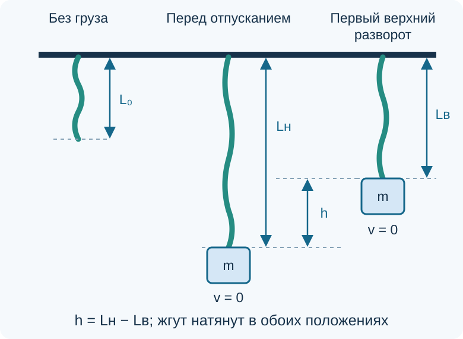
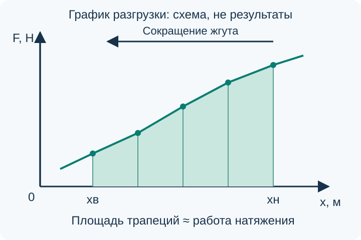

Лабораторная работа «Работа силы и изменение механической энергии»
Растянутый резиновый жгут может поднять груз. В этой работе мы сопоставим оценку работы силы натяжения с увеличением потенциальной энергии груза. Для этого измерим высоту подъёма и построим график силы при сокращении жгута.
Что понадобится
Работа рассчитана на малую группу. Нужны штатив с надёжным креплением, лёгкий резиновый жгут, груз известной массы, линейка, динамометр и телефон с видеозаписью. Если масса не указана на грузе, понадобятся весы. Видеозапись нужна только для определения первого верхнего положения; отправлять её куда-либо не требуется.
Наличие оборудования заранее не предполагается: до начала опыта проверьте комплект вместе с учителем. Диапазон динамометра и допустимое растяжение должны подходить выбранному грузу. Жгут должен быть заметно легче груза.
Почему сравниваем работу с энергией
Рассмотрим только груз, а потенциальную энергию определим для его взаимодействия с Землёй. Его механическая энергия:
Жгут первоначально растянут. Груз удерживают в нижнем положении, затем отпускают без толчка. Он поднимается и на мгновение останавливается в первом верхнем положении. В начальный и конечный моменты скорость равна нулю, поэтому изменение кинетической энергии между ними равно нулю. При подъёме на высоту \(h\):
На груз действуют сила тяжести вниз и сила натяжения вверх. По теореме об изменении кинетической энергии, если сопротивлением воздуха можно пренебречь:
Установка и обозначения
Измеряйте расстояния между одними и теми же метками у концов рабочей части жгута. Длину крючка или подвеса не включайте в удлинение резины. Для высоты подъёма отслеживайте одну метку на грузе, который должен двигаться вертикально без заметного раскачивания и поворота.

Открыть схему установки крупнее

- \(L_0\) — длина ненагруженного жгута после короткого отдыха;
- \(L_{\text{н}}\) — его длина при удержании груза в начальном нижнем положении;
- \(L_{\text{в}}\) — длина в первом верхнем положении;
- \(x_{\text{н}}=L_{\text{н}}-L_0\) и \(x_{\text{в}}=L_{\text{в}}-L_0\) — соответствующие удлинения;
- \(h=L_{\text{н}}-L_{\text{в}}=x_{\text{н}}-x_{\text{в}}\) — высота подъёма при неизменной форме подвеса.
В обоих положениях жгут должен оставаться натянутым: \(x_{\text{н}}>x_{\text{в}}>0\).
Как оценить работу переменной силы
При сокращении жгута натяжение меняется. Поэтому нельзя умножать начальную силу на весь путь. Работа оценивается площадью под графиком зависимости силы от удлинения на участке разгрузки от \(x_{\text{н}}\) до \(x_{\text{в}}\).
Для обработки удобно записать измеренные удлинения по возрастанию:
Тогда положительную работу натяжения при подъёме приближённо находят как сумму площадей трапеций:


Пример обработки одного участка
Площадь трапеции
На отдельном условном участке графика сила меняется от \(0{,}4\) до \(0{,}6\ \text{Н}\), а удлинение — от \(0{,}02\) до \(0{,}03\ \text{м}\). Оценка работы на этом участке:
Это пример вычисления, а не результат вашей лабораторной работы. В отчёт внесите собственные измерения.
Порядок работы
1. Подготовьте движение
- Измерьте \(L_0\), запишите массу груза и цену деления приборов. Убедитесь, что динамометр без нагрузки показывает нуль.
- Подвесьте груз и дождитесь равновесия. Оттяните его немного вниз. Малое отклонение и допустимую нижнюю метку выберите с учителем после пробного опыта.
- Отпустите груз без толчка. Проверьте, что он движется почти вертикально, а в первом верхнем положении резина не провисает. Если провисает, уменьшите начальное отклонение от равновесия и повторите пробу.
2. Измерьте высоту подъёма
- Закрепите линейку рядом с траекторией. Камеру расположите неподвижно, перпендикулярно плоскости движения; линейка и метка груза должны находиться примерно на одинаковом расстоянии от камеры.
- Снимите отпускание с выбранной нижней метки. Найдите на записи первый верхний разворот, а не положение, в котором груз окончательно успокоился. Определите \(L_{\text{н}}\), \(L_{\text{в}}\) и \(h\).
- Выполните три запуска с одной нижней метки и примерно одинаковой короткой выдержкой перед отпусканием. Запишите результаты всех запусков. Для расчёта используйте среднюю высоту \(\bar h\) и соответствующее среднее \(x_{\text{в}}\).
3. Снимите график разгрузки
- Снимите груз. Закрепите динамометр на штативе над жгутом, проверьте его нуль в вертикальном рабочем положении до присоединения жгута. Подвесьте тот же жгут к нижнему крючку динамометра и тяните рукой нижний конец жгута вертикально вниз. Так собственный вес корпуса динамометра не нагружает резину. Измеряйте длину между прежними метками на жгуте, не включая динамометр. Влиянием веса самого жгута пренебрегаем только потому, что он существенно легче груза.
- Доведите жгут до прежнего \(x_{\text{н}}\) и выдержите примерно столько же, сколько перед запусками. Затем плавно уменьшайте растяжение до \(x_{\text{в}}\). Снимите 5–7 пар значений \(x\) и \(F\), включая оба конца участка. На каждой метке задерживайтесь лишь для чтения показаний и одинаковым образом во всех измерениях.
- Записывайте показания именно при сокращении. Если случайно прошли нужную метку, не возвращайтесь к ней растяжением: начните разгрузку заново из исходного положения. При заметном изменении свойств жгута повторите серию и отметьте это в отчёте.
4. Обработайте результаты
- Переведите значения в СИ. Расположите точки по возрастанию \(x\), постройте график \(F(x)\) и подпишите направление разгрузки.
- Вычислите площади трапеций и их сумму \(A_{\text{оценка}}\). Найдите \(\Delta E_{\text{мех}}=mg\bar h\), используя \(g=9{,}8\ \text{м}/\text{с}^2\).
- Рассчитайте абсолютное расхождение и его отношение к изменению энергии:
Число \(\varepsilon\) характеризует расхождение двух результатов; само по себе оно не является полной погрешностью измерения и не задаёт универсальной границы «опыт удался».
Таблицы для отчёта
Запишите отдельно: \(m\), \(L_0\), цену деления линейки и динамометра. Все пустые ячейки заполняются по вашим измерениям.
| Запуск | \(L_{\text{н}}\), м | \(L_{\text{в}}\), м | \(h\), м |
|---|---|---|---|
| 1 | |||
| 2 | |||
| 3 |
| Точка графика | \(x\), м | \(F\) при разгрузке, Н |
|---|---|---|
| 0 | ||
| 1 | ||
| 2 | ||
| 3 | ||
| 4 | ||
| 5, если измерена | ||
| 6, если измерена |
| \(\bar h\), м | \(A_{\text{оценка}}\), Дж | \(mg\bar h\), Дж | \(d\), Дж | \(\varepsilon\), % |
|---|---|---|---|---|
Как оценить качество результата
Укажите разброс высот в трёх запусках. Оцените, насколько уверенно удалось прочитать крайние положения по линейке и записи. Сравните эти изменения длины с самим \(h\): малая высота, сравнимая с неточностью отсчёта, делает относительное расхождение малоинформативным.
Для оценки чувствительности расчёта можно повторно вычислить работу, сдвинув показания сил на выбранную оценку неточности их чтения. Для \(mgh\) аналогично проверьте влияние неточности высоты и массы. Укажите, как именно выбраны эти оценки; не называйте их строгой доверительной границей. Сопоставьте получившееся изменение результата с \(d\).
Энергия растянутой резины и потенциальная энергия груза относятся к разным объектам. Работа натяжения передаёт энергию грузу; её не надо ещё раз прибавлять к \(mgh\). В этой работе мы не измеряем непосредственно полное изменение внутренней энергии резины.
Что включить в вывод
В выводе назовите оба полученных значения в джоулях, расхождение, наблюдавшийся разброс и наиболее существенные ограничения. Объясните, насколько ваши данные позволяют говорить о согласии оценки работы с увеличением механической энергии груза. Не подгоняйте силы или высоты под ожидаемое равенство.
Отчёт содержит цель, схему, исходные величины, обе таблицы измерений, график, хотя бы один подробно записанный расчёт трапеции, итоговое сравнение и собственный вывод.
Вопросы для самопроверки
Проверьте объяснение опыта
1. Почему в начальном и первом верхнем положениях можно сравнивать только потенциальные энергии груза? 2. Почему верхнее положение нельзя заменить окончательным положением равновесия? 3. Почему используется график разгрузки, а не нагружения? 4. Какие знаки имеют работы натяжения и тяжести при подъёме? 5. Почему одно лишь расхождение двух чисел ещё не опровергает закон сохранения энергии?
Если комплект неполный
Если телефонов для групп нет, первый верхний разворот можно снять одной общей камерой, а измерения графика выполнить по группам. Без камеры допускается отсчёт верхнего положения наблюдателем по линейке, но его меньшую воспроизводимость нужно проверить повторениями и указать в выводе.
Если безопасно собрать установку или измерить силу нельзя, численные результаты не придумывают. Можно разобрать схему и способ расчёта, а экспериментальную часть выполнить после подготовки оборудования. Один только график растяжения без измерения подъёма позволяет оценить работу, но не является независимым сравнением с изменением механической энергии.
Домашнее задание: § 40–47, повторить. Завершить обработку собственных измерений, если она не закончена на уроке.